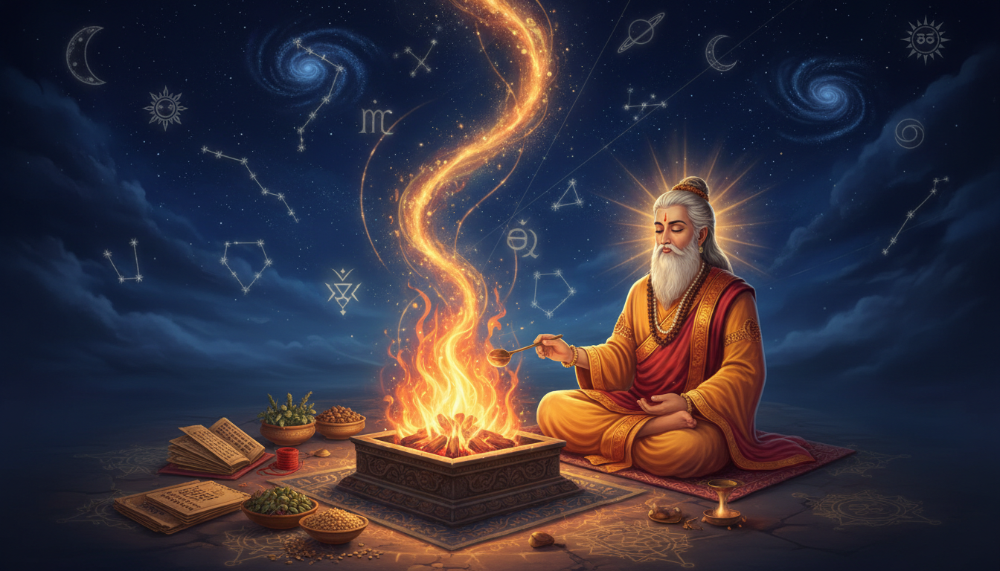

When fever came to a village like an uninvited guest, when a child could not sleep after an evil dream, when a farmer saw signs he did not understand, and when a king felt invisible enemies gathering around his throne, the ancient world did not have the language of laboratory medicine. It had something older and more intimate: fire, herb, breath, word, star, and intention. Rishi Atharvan became legendary because he turned these raw instruments into a disciplined science of protection. He did not achieve occult remedy mastery by running away from fear. He achieved it by carrying fear into the fire and teaching people how to transform it.

The tradition remembers Atharvan as the fire-priest who first brought the sacred flame into ritual use, first offered Soma, and first instituted yajña. He is therefore called the father of fire. He married Shanti, whose very name means peace, and their lineage continued through the great sage Dadhichi. But Atharvan's deeper gift was not merely the outer flame. It was the hidden method: how a human being can use mantra, herbal knowledge, sacred time, and ethical will to repair the subtle field around body, home, kingdom, and mind.
The Story: From Heavenly Fire to Human Protection
Imagine Atharvan as a young priest standing before creation itself. Brahma, the creator, is said to have revealed the higher knowledge to him, and Atharvan receives it not as a certificate but as a responsibility. The world is full of unseen currents. Sickness moves like an arrow. Jealousy moves like smoke. Fear enters a house before a human enemy crosses the threshold. A king's anxiety can infect a nation. Atharvan understands that if these forces are left unrecognized, they rule the human imagination.
So he chooses fire as his teacher. Fire is visible, yet it changes whatever it touches. Fire is dangerous, yet it cooks food, purifies offerings, carries prayers, and illuminates darkness. In the same way, Atharvan trains himself to work with powers that are invisible but not imaginary. He learns that a remedy is not only a substance. It is a precise relationship between word, matter, time, deity, and the sincerity of the practitioner.
The Atharva Veda preserved his lineage's knowledge. Its older name, Atharvangirasah, joins two currents: Atharvan, the auspicious healing current, and Angiras, the fierce protective current. Later tradition often simplifies this as "magical formulas," but the deeper meaning is more precise. Atharvan is the physician of the subtle field. Angiras is the guardian of boundaries. Together they form a complete remedial system: healing when possible, protection when necessary, and higher wisdom when the soul is ready.
What "Occult" Means in Atharvan's Path
Occult does not mean unethical black magic. In this story, occult means gupta vidya: the hidden science of causes. Atharvan's occult remedy mastery has seven layers.
| Layer | Hidden power | Practical meaning |
|---|---|---|
| Agni tattva | Sacred fire | Transforming fear, illness, and karma into offering |
| Oshadhi vidya | Plant intelligence | Using herbs, woods, roots, smoke, and water as carriers of mantra |
| Brahma vak | Sacred speech | Reciting formulas with correct intention and pronunciation |
| Pratisara | Amulet science | Creating a protective boundary around body, home, and work |
| Krityapratihara | Counter-affliction | Returning hostile energy ethically and only for protection |
| Nakshatra timing | Cosmic timing | Matching remedies with planetary and lunar currents |
| Brahmavidya | Highest wisdom | Realizing that ritual is finally meant to reveal the Self |
This is why Atharvan's path is so relevant for a modern spiritual seeker. It does not split astrology, Ayurveda, ritual, philosophy, and protection into separate compartments. It treats them as one healing architecture.
The Atharvan-Angiras Secret
The most important secret of Atharvan's achievement is his refusal to deny darkness. Many spiritual paths collapse because they pretend that negativity does not exist. Atharvan's method is different. He names the fever. He names the poison. He names the sorcerer. He names the evil dream. Then he invokes a higher order: Agni to burn it, Varuna to reveal falsehood, Rudra to withdraw the arrow, the Ashvins to restore health, herbs to support the body, and mantra to reorder the mind.
This is why the Atharva Veda contains hymns against fever, wounds, worms, poison, fear, enemies, curses, evil dreams, and demonic seizure. It is not a book of superstition. It is one of the oldest surviving records of humanity's attempt to combine psychology, medicine, ritual, and cosmology into one practical science.
Atharvan's Seven Remedial Powers
1. He mastered the fire boundary
Atharvan's first remedy is fire discipline. A lamp is not merely decoration. It is a visible declaration that consciousness is stronger than fear.
A simple Atharvan fire-boundary practice:
- Light a ghee lamp at sunrise or sunset.
- Fold your hands and say: "Agni, you see what I cannot see. Burn what is unnecessary in me and protect what is innocent in me."
- Offer one spoon of warm water to a plant after the prayer.
- Keep the lamp in the east or southeast when possible.
- Repeat for twenty-one days, especially during emotional turbulence, illness, or disturbing dreams.
This ritual teaches the Atharvan principle: darkness is not fought by denial. It is transformed by conscious light.
2. He mastered herbal intelligence
The Atharva Veda praises plants as living powers. Its famous herb hymn invokes the tawny, pale, variegated, red, dusky, and black plants, asking them to deliver a person from affliction. Atharvan's genius was to connect plant medicine with mantra and timing.
For daily support, a practitioner may keep a small Atharvan herb bowl containing turmeric, dried tulsi or holy basil, kushtha or costus if available, apamarga if traditionally available, and a few grains of barley. The bowl is not for casual ingestion. It is a devotional field, a reminder that nature itself participates in healing. A qualified Ayurvedic practitioner should be consulted before taking any herb internally.
3. He mastered protective amulets
The Atharva Veda repeatedly speaks of amulets made from gold, pearl, wood, herbs, shell, varana, khadira, shami, and apamarga. These are not charms that mechanically replace effort. They are ritual anchors. They remind the subconscious that a boundary has been set.
A simple Atharvan pratisara practice is to take a yellow or red thread, tie three knots, and with each knot say:
- First knot: "Agni guards my body."
- Second knot: "Varuna guards my speech."
- Third knot: "Rudra withdraws every unseen arrow."
Wear it on the right wrist or place it near your home altar. When the thread becomes worn, thank it, place it in flowing water if appropriate, and make a fresh one.
4. He mastered counter-sorcery without becoming a sorcerer
Atharvan's occult greatness lies in ethical restraint. The tradition knows hostile rites, but the spiritually mature practitioner uses protective counter-measures only. Atharvan's fire does not teach you to curse someone. It teaches you to become so clear that a curse cannot find a place to attach.
A safe counter-affliction ritual:
- Write the fear or repeated disturbance on paper in one short sentence.
- Light a lamp or small homa fire in a safe place.
- Offer black sesame, rice, and ghee while saying: "Whatever is false, return to truth. Whatever is not mine, be dissolved. Whatever is mine, be healed."
- Burn the paper safely, or tear it and bury it if fire is not possible.
- Clean the space, take a bath, and eat freshly cooked simple food.
This follows the spirit of Atharvan's krityapratihara current: remove the attachment, close the breach, and refuse to send harm to another person.
5. He mastered the medicine of breath
The Atharva Veda glorifies Prana, the life-breath, as a supreme force. Atharvan knew that panic disrupts breath, disturbed breath weakens the mind, and a weak mind loses its protective clarity.
A nine-breath Atharvan practice:
- Inhale for four counts, mentally seeing golden smoke entering the heart.
- Hold for two counts, feeling warmth become steadiness.
- Exhale for six counts, releasing grey smoke through the feet.
- With the final breath, say: "Prana protect this body, this mind, and this home."
This is especially useful before meditation, difficult conversations, travel, and sleep.
6. He mastered planetary timing
Atharvan did not practice remedies as random superstition. He aligned them with cosmic rhythm. In the Vedic worldview, Sun, Moon, Mars, Mercury, Jupiter, Venus, Saturn, Rahu, and Ketu are not merely outer objects. They are time-lords, showing how destiny expresses itself.
On 18 October 2026, the sidereal sky gives a remarkable Atharvan window. Jupiter is exalted in Cancer and preparing to leave for Leo at the end of October. Mars is also in Cancer, traditionally debilitated and in Ashlesha. Saturn is retrograde in Pisces. Rahu is in Aquarius and Ketu in Leo. Venus is retrograde in its own sign Libra, while the Sun is in Libra. This creates a strong push-and-pull between healing wisdom and emotional fire, between ancestral karma and personal ego, between relationship harmony and psychic noise.
| Current transit | Atharvan interpretation | Practical remedy |
|---|---|---|
| Jupiter exalted in Cancer | Great window for healing knowledge, family repair, and emotional intelligence | Thursday ghee lamp, study one healing verse, turmeric offering |
| Mars debilitated in Cancer | Anger hidden as anxiety, inflammation, family friction | Tuesday red-lentil donation, Hanuman remembrance, cooling speech |
| Saturn retrograde in Pisces | Old karmic debts and subconscious fear returning | Saturday black sesame, service to elders, silence for nine minutes |
| Rahu in Aquarius | Sudden mental noise, digital anxiety, invisible fears | Camphor light, disciplined sleep, reduce doomscrolling |
| Ketu in Leo | Detachment from ego, protection from false praise | Sunday Surya offering, practice humility |
| Venus retrograde in Libra | Relationship patterns repeating for correction | Friday white flowers, forgiveness journal, honest communication |
| Sun in Libra | Need to balance self-respect and partnership | Sunrise water offering, no impulsive public conflict |
Atharvan's wisdom is simple: do not fear a transit. Convert its pressure into the correct remedy.
7. He mastered the final philosophy
The Mundaka Upanishad, associated with the Atharva Veda, distinguishes lower knowledge from higher knowledge. Herbs, mantras, astrology, and ritual belong to the lower or practical field, not because they are inferior, but because they are instruments. Higher knowledge is the knowledge of the imperishable Brahman.
Atharvan therefore becomes complete only when his remedies lead the seeker inward. The final protection is not a wall around the ego. It is the discovery that the deepest Self cannot be cursed, infected, diminished, or conquered by fear.
Five Lesser-Known Atharvan Rituals
1. Apamarga boundary ritual
Apamarga, traditionally identified with Achyranthes aspera, is invoked in the Atharva Veda as a "wiping away" plant. Its very name suggests removal of impurity.
Practice: Sweep the main entrance, sprinkle water mixed with a pinch of turmeric, and mentally draw a protective arc at the threshold while saying: "False force, stay outside. Health, clarity, and prosperity, enter here." Do this on a Tuesday or Saturday when the home feels psychologically heavy.
2. Barley-water pacification
Barley and water appear in Atharvanic healing as universal remedies. Barley represents stability and nourishment; water represents flow and purification.
Practice: Keep a small copper or clay vessel of water with barley grains near the entrance for one night. The next morning, offer the water to a plant. This is a gentle ritual for homes with disturbed sleep, quarrels, or recurring illness.
3. Kushtha smoke alignment
Kushtha, often associated with costus, is praised as a powerful fever-removing plant in the Atharva Vedic healing hymns. In ritual use, it can be part of a fumigation blend with ghee and resins, provided the material is authentic and safe.
Practice: On an evening when fear is high, light a small dhoop or resin preparation in a ventilated room. As the smoke rises, say: "May the unseen arrow be withdrawn. May the air become medicine." Do not inhale smoke directly and do not use this as a substitute for medical treatment.
4. Lead-threshold protection
The Atharva Veda has a hymn using lead against demons and sorcerers. In a symbolic modern practice, a small piece of lead or iron may be placed beneath the threshold or inside a sealed protective packet, not worn against skin and never ingested. Its meaning is density: heavy, chaotic influences cannot pass through conscious boundaries.
Practice: If the home feels repeatedly disturbed, place a small sealed packet near the main entrance with rice, black sesame, and a tiny iron nail. Mentally repeat: "My boundary is clear, my intention is just, my home is protected."
5. Evil-dream release
The Atharva Veda contains rites for evil dreams. It teaches that a dream is not merely an image; it is a disturbance in the subtle field.
Practice: After a frightening dream, do not narrate it immediately in detail. Wash your face and hands, sit facing east, and say: "The dream has passed. The sun is greater than the night." Donate simple food or feed a cow or bird the same day. This closes the psychic loop instead of feeding it with fear.
The Twenty-One Day Atharvan Fire Sadhana
This is a compact modern practice based on Atharvan's principle of fire, word, boundary, and charity.
| Days | Focus | Practice |
|---|---|---|
| 1 to 3 | Purification | Morning lamp, evening nine-breath practice, simple food |
| 4 to 7 | Protection | Three-knot thread, threshold water, Agni mantra |
| 8 to 11 | Healing | Herb bowl, gratitude for body, consult doctor if symptoms persist |
| 12 to 14 | Speech repair | No gossip, twenty-one recitations of "Om Agnaye Namah" |
| 15 to 17 | Ancestral repair | Black sesame offering, service to elders, forgive one family wound |
| 18 to 20 | Psychic hygiene | No doomscrolling after sunset, camphor light, dream journal |
| 21 | Completion | Feed someone, donate books or medicine, study one spiritual verse |
This sadhana is not a magical shortcut. It is a discipline that makes the aura less porous, the mind less reactive, and the will more luminous.
Ayurveda: The Atharvan Bridge
Ayurveda has always remembered its Vedic root. The Caraka Samhita specifically praises devotion to the Atharva Veda for the physician, and Sushruta's tradition also acknowledges the Atharvanic foundation. Atharvan's method therefore becomes complete when ritual is supported by daily care.
| Concern | Atharvan-inspired support | Caution |
|---|---|---|
| Fever and immunity | Guduchi, tulsi, coriander water, light food | Always consult a physician |
| Fear and sleep | Oil massage, early dinner, Brahmi or Ashwagandha if suitable | Use only with professional advice |
| Inflammation and anger | Cooling food, less salt and spice, gentle breathing | Do not self-treat chronic disease |
| Weak boundaries | Regular routine, truthfulness, digital fasting | Therapy may be necessary for anxiety |
| Recovery after illness | Rice gruel, barley water, ghee as appropriate | Follow clinical advice |
Ayurveda is the body of the system; astrology is the timing; ritual is the language; philosophy is the purpose.
The Deeper Meaning of Atharvan's Marriage to Shanti
The tradition says Atharvan married Shanti, daughter of Kardama Prajapati. This detail is spiritually beautiful. Atharvan is fire; Shanti is peace. True occult power is safe only when fire is married to peace.
A person who has knowledge but no peace becomes dangerous. A person who has peace but no knowledge cannot protect others. Atharvan's lineage combines both. This is the hidden instruction for anyone attracted to occult remedies: first become peaceful, then become powerful, and finally become compassionate.
Why Atharvan Still Matters
Modern life has new names for old problems. Anxiety is a fever of the nervous system. Information overload is a possession by thousands of voices. Comparison culture is an evil eye. Burnout is a depletion of Prana. Atharvan's system speaks directly to this condition because it begins where the problem begins: in the subtle reaction of the mind before it becomes a visible disease.
When you light a lamp with awareness, you are practicing Atharvan's fire. When you refuse to speak a curse, you are practicing Atharvan's ethics. When you choose the correct day for a remedy, you are practicing Atharvan's astrology. When you support the body with proper food and herbs, you are practicing Atharvan's Ayurveda. When you ask who the Self truly is, you are practicing Atharvan's final philosophy.
Rishi Atharvan achieved occult remedy mastery because he did not use hidden power to escape the world. He used it to make the world safer, cleaner, healthier, and more conscious. That is the victory this story offers you: not fear of invisible forces, but mastery over the invisible forces inside your own fear.
Sources
- Wikipedia: Category:Rishis
- Wikipedia: Atharvan
- Wikipedia: Atharvaveda
- Maurice Bloomfield, Hymns of the Atharva Veda, Sacred Books of the East
- V. V. Bhide, Medical Treatment and Medicinal Charms Mentioned in the Atharvanic Literature
- WisdomLIB: Atharvan definitions and Purana references
- Hindupedia: Atharvan
- Encyclopedia.com: Atharvan
- Sacred Texts: The Hymns of the Atharva Veda
- Astrolytix: Planetary positions on 18 October 2026
- AppliedJyotish: Current planetary positions, 18 October 2026
- Muhurat Choghadiya: Today's Gochar, 18 October 2026
- Mundaka Upanishad, Wikisource
- Caraka Samhita Online
- Atharva Veda Book 8, Hymn 7: Hymn to medicinal plants
- Atharva Veda Book 1, Hymn 16: Charm with lead against demons and sorcerers
- Atharva Veda Book 4, Hymn 17: Apamarga against sorcery and demons
- Atharva Veda Book 10, Hymn 1: Charm to repel sorceries
- École française d'Extrême-Orient: Charmes védiques, Atharvaveda Book 3
- Jarrod Whitaker, Believing in Magic and Other Pitfalls with Interpreting the Atharvaveda